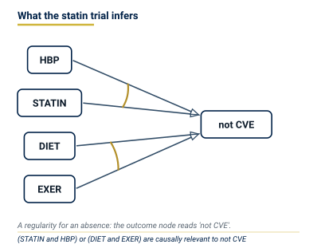
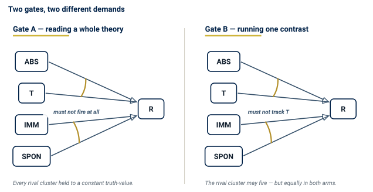
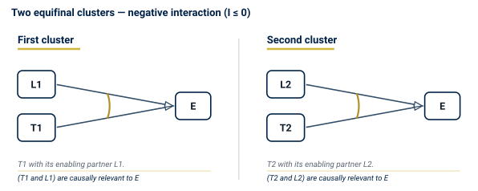

Causal Regularity Theory II: Experimental Inference
Probabilistic Cover, Causal Hypothesis Inference from Experimental Data, and the Semantic Ground Source
![]()
Experimental statistics, as standardly practised, infers a parameter (\(p_1 = p_0\)) and then reads the result as causal. This volume replaces that extra-statistical step with causal hypothesis inference: the object of inference is a candidate cluster or minimal theory, expressed in the language of Volume I; statistics estimate firing rates and grade evidence without supplying the hypothesis. The firing-rate identity shows why the sign of a significant risk difference licenses cluster-membership of the treatment factor, with the polarity that the sign fixes, only under contrastive bundle homogeneity (Gate B) — not under Mill’s totality of conditions, and not from a \(p\)-value alone. Standard designs (randomised trial, factorial, cohort, case-control, sequential, meta-analysis, crossover) are instances of the same inference under different assignment and sampling mechanisms. Volume I states the qualitative definition; Volume III executes the procedure on the casebook.
causal hypothesis inference, probabilistic cover, bundle homogeneity, difference-test, e-values, statistical inference, experimental design, deep reading, regularity theory
Causal Regularity Bundle — Volume II. Companion volumes: I (qualitative theory), III (casebook). Terms are used in the senses of the LWgrammar registers causal-regularity and experimental-statistics.
Introduction
Under contrastive bundle homogeneity (Gate B), a significant risk difference licenses cluster-membership of the treatment factor, and its sign fixes the polarity: a positive difference places the treatment in a cluster for the outcome, a negative one in a cluster for the outcome’s absence. Without Gate B the difference licenses no structural claim. Hypothesis testing of a parameter is not that licence.
What a trial actually tells you
A trial of 20,000 patients reports that statins reduce cardiovascular events, \(p < 0.001\). The finding is real, the trial is well conducted, and the conclusion drawn from it is almost always stated in a form the statistics do not support.
What the test establishes is a claim about two numbers: the event rate under treatment differs from the event rate under placebo. What the reader takes away is a claim about causal structure: statins are part of what keeps cardiovascular events from occurring. The second claim does not follow from the first by any statistical step. It follows — when it follows at all — from the first together with an assumption about the trial’s design, and the business of this volume is to say exactly which assumption, and what happens when it fails.
The structure the trial is really reaching for is a minimal theory, in the sense of Volume I, and it can be drawn:

Volume II derives what the noisy, replicated regime of real experiments can still establish about such structures.
From qualitative to experimental inference
Volume I established when a minimal theory can be read off a qualitative coincidence table: when bundle-level homogeneity is not violated and every configuration is observed deterministically. Real experiments operate under a different regime: rows are replicated across units that differ in their unmeasured background conditions, the outcome varies probabilistically even within the same measured configuration, and the experimenter cannot verify that all latent bundles are frozen.
Volume II derives what this noisy, replicative regime can still establish about causal structure. The key move is to replace “each bundle fires or not in this case” with “each bundle fires with some frequency across units drawn from this population.” That shift generates a quantitative layer on top of the qualitative structure, without abandoning or replacing the underlying Boolean theory — a theory built from and, or and not over factors that are either present or absent. Causal relevance remains a yes-or-no matter: a factor is relevant when it is a member of a minimally sufficient condition (MSC-membership); the numbers are frequencies, not degrees.
The central contribution
The received practice of experimental statistics infers a parameter: it tests whether \(p_1 = p_0\) and, if significant, concludes that treatment has “an effect.” The causal reading is an extra-statistical step, typically performed informally. This volume replaces that step.
Statistics estimate firing rates and grade evidence; they do not replace the hypothesis. The standard experimental designs — seven of them in Table 4 — are reconstructed below as instances of the same inference.
Experimental data
The Probabilistic Cover
From deduction to probabilistic error theory
The deductive schema of Volume I delivers valid causal claims given perfect premisses. Real data are noisy and sparse: the causal field may be incompletely observed, factors may be measured with error, and the coincidence table may not include all test situations relevant to alternative causal clusters. The probabilistic cover is the theory of error for these departures — it grades the epistemic quality of the premisses without replacing the deductive logic.
Two kinds of departure require different treatment; P1 and P2 are the premisses of Volume I’s deductive schema (P1: the coincidence table as evidence; P2: the field is homogeneous). Homogeneity violations (P2 failure) show up as contradictory configurations. Incompleteness of the evidence (P1 failure) is measured by fit scores and robustness — how well a minimal theory accounts for the observed data and how stable that account is across thresholds. The second treatment is legitimate only after the first has been tested.
Homogeneity as the gate of the probabilistic cover
(Register: homogeneity, II.1 [Gate A: sufficiency-reading]; homogeneity, III.1 [Gate B: difference-test]. The two senses are distinct and must not be conflated — see Section 4.)
Because HC — the homogeneity condition, premiss P2 of Volume I — is the minimal homogeneity condition (Volume I, register sense II.1) — each latent background bundle keeps one truth-value across the field, not Mill’s totality of constant background factors — its violation carries real information. A contradictory configuration shows that some latent bundle fired in one test situation and not in the other: an active, unblocked causal cluster outside the factor set. Which cluster it is, the table does not say; finding it is the repair, and the probabilistic cover must not average it away.
Two distinct inferences call for two distinct homogeneity gates. They must not be conflated.
Gate A — Sufficiency-reading (Boolean cluster search on the coincidence table):
| \(C_E\) result | Status | Permitted output |
|---|---|---|
| \(C_E=0\), replicated configurations adequate | HC not falsified for sufficiency-reading | Search and grade theories by fit, robustness, consistency weight, and e-values |
| \(C_E=0\), little or no replication | HC unverified (test has low power) | Provisional theory only; report the test’s low diagnostic power |
| \(C_E>0\), small \(B_E\) with documented measurement error | HC violated by measurement noise | Correct or model the error, retest; no unqualified MSC verdict |
| \(C_E>0\), substantive \(B_E\) or systematic contradictions | HC violated by an active latent bundle | Suspend MSC reading; require field separation or factor-set expansion |
Gate B — Difference-test relevance (randomised controlled trial (RCT), cohort, or stratified study):
| Design condition | Status | Permitted inference |
|---|---|---|
| No latent bundle’s firing probability depends on \(T\); enabling partners balanced | Contrastive bundle homogeneity met | Difference-test is valid; the sign of \(p_1 - p_0\) licenses MSC-membership of \(T\) with that polarity (Section 5.2) |
| Identifiable rival bundle blocked by design (eligibility/protocol) | Bundle kept false for all units | Valid; \(C_E>0\) expected and does not invalidate the test |
| Unidentifiable rival bundle balanced by randomisation | Bundle firing independent of \(T\) in expectation | Valid probabilistically; \(C_E>0\) expected and does not invalidate the test |
| Rival bundle firing correlated with \(T\) (unmeasured confounder) | Contrastive bundle homogeneity violated | Difference-test confounded; MSC-membership inference invalid |
| Enabling partner of \(T\)’s MSC not uniform across arms | Cluster under study selectively enabled | Apparent effect is artefact of the enabling partner; block or measure it |
Gate B makes explicit what the conventional criterion of “no unmeasured confounding” means inside regularity theory: it is the requirement that no latent bundle’s firing probability depends on the factor under test. Randomisation, eligibility criteria, and protocol are the instruments for meeting this requirement. Gate B does not require \(C_E = 0\): in any realistic trial with \(\mathcal{F} = \{T, E\}\), patients differ in their background states and \(C_E > 0\) is expected. That is not a homogeneity violation for the purpose of the difference-test; it is evidence that the trial factor set is incomplete for MSC-reading (Gate A) but does not invalidate the relevance inference (Gate B).
Gate A prevents a basic category mistake: high consistency or coverage cannot repair a violated sufficiency-reading premiss. A formula may fit most rows while the same measured configuration yields opposite outcomes. Bayesian consistency weighting and e-value accumulation are likewise downstream of Gate A and must not average over contradictory causal fields when sufficiency-reading is the goal.
The complete analysis sequence is therefore:
- designate the outcome \(E\) and the factor set \(X\);
- run the exact contradiction test and report \((C_E,B_E)\);
- if \(C_E>0\), diagnose provenance, measurement, field mixture, and omitted factors; suspend the causal verdict;
- repair the data, block the offending cluster by design, or expand/stratify the causal field, and retest HC;
- only when HC is not falsified, compute consistency, coverage, robustness, Bayesian ambiguity, and sequential e-values;
- retain the qualification HC not falsified in the observed configurations in the final verdict.
Fit scores and the ambiguity set
(Register: consistency, I.1; coverage, I.1; consistency weight, I.1; ambiguity set, I.1.)
Gate A passed, the engine searches the space of minimal theories. For any candidate theory \(\mathcal{M}\), define:
\[ \text{con}(\mathcal{M}) = \frac{\text{TP}}{\text{TP} + \text{FP}}, \quad \text{cov}(\mathcal{M}) = \frac{\text{TP}}{\text{TP} + \text{FN}}, \]
where TP counts cases where \(\mathcal{M}\) fires and \(E = 1\), FP where \(\mathcal{M}\) fires and \(E = 0\), and FN where \(E = 1\) but no MSC of \(\mathcal{M}\) fires.
The FitVector summarises the epistemic standing of \(\mathcal{M}\) in a replication context: \((n, \text{con}, \text{cov}, \text{robustness}, \tau_c, \tau_v)\) where \(\tau_c, \tau_v\) are the consistency and coverage thresholds at which \(\mathcal{M}\) is recovered. Robustness is the fraction of threshold pairs \((\tau_c, \tau_v) \in [0.7,1]^2\) (the engine’s default grid, in steps of \(0.05\)) at which the same theory is recovered — a theory present only at the exact calibrating threshold has robustness near zero and should be treated with caution.
The ambiguity set \(\mathcal{A}\) is the set of fit-equivalent minimal theories returned at a fixed \((\tau_c, \tau_v)\). \(|\mathcal{A}| > 1\) means the data are compatible with multiple theories; the engine reports all members, together with the set of factors on which they agree (the consensus core). Volume I assumes that the true theory is unique (premiss P4, causal uniqueness); \(|\mathcal{A}| > 1\) is therefore always an evidence-insufficiency finding, never an ontological indeterminacy.
Bayesian consistency weighting
Given \(\mathcal{A}\), assign each \(\mathcal{M}_k\) a consistency weight via the Beta-binomial model:
\[ w_k \propto P_{\text{prior}}(\mathcal{M}_k) \cdot \frac{B(a + \mathrm{TP}_k,\, b + \mathrm{FP}_k)}{B(a,b)}, \]
where \(B(\cdot,\cdot)\) is the Beta function. The ratio is the probability of the observed \(\mathrm{TP}_k\) successes and \(\mathrm{FP}_k\) failures, in their order, among the cases on which \(\mathcal{M}_k\) fires, when the probability of \(E\) given that \(\mathcal{M}_k\) fires carries a \(\mathrm{Beta}(a,b)\) prior. The denominator \(B(a,b)\) is the same for every member of \(\mathcal{A}\) and cancels when the weights are normalised; the engine keeps it so that absolute values remain comparable across hyperparameters. Under a uniform prior over the members of \(\mathcal{A}\) the \(P_{\mathrm{prior}}\) term cancels as well. The default \(\mathrm{Beta}(1,1)\) prior is the uniform distribution. This is not Bayesian model averaging: the members of \(\mathcal{A}\) are rival theories scored on the same cases, not independent Bernoulli processes, and the weight uses only the cases on which a theory fires (TP and FP), not its coverage. The term “Bayesian model averaging” is superseded by consistency weight (register I.1), which correctly emphasises that the quantity grades consistency with the data, not posterior probability in the full Bayesian sense.
The query graded_relevance(A, E) reports Boolean relevance, the best FitVector among MSCs containing \(A\), and the consistency membership of \(A\): the normalised sum of \(w_k\) over those \(\mathcal{M}_k\) that contain \(A\) as a literal, positive or negative (a literal is a factor or its negation as it occurs in a formula: \(A\) is the positive literal, \(\neg A\) the negative one).
Anytime-valid inference: e-values
(Register: e-value, I.1. The null specifies \(p_0\) as the empirical base rate, not 0.5 by default — see rule of use.)
Standard tests require fixing the sample size in advance — optional stopping invalidates their Type-I error guarantees. A literature-mining agent accumulates evidence one study at a time and needs anytime-valid inference.
We implement safe testing via e-values and e-processes (Ramdas et al. 2023; Grünwald et al. 2024). An e-value is a nonnegative statistic whose expectation under the null is at most 1. An e-process is a nonnegative sequence \((K_t)_{t\ge 0}\), \(K_0=1\), whose value at every stopping time \(\tau\) is an e-value, \(\mathbb{E}[K_\tau]\le 1\) under the null; a stopping time is any rule for when to stop that uses only the observations made so far. The construction below builds \(K_t=\prod_{s\le t}E_s\) from one-step factors \(E_s\) whose conditional expectation given the past is at most 1 under every null distribution. The product is then a nonnegative supermartingale, Ville’s inequality applies (Section 6.6.5), and the agent may reject the null as soon as \(K_t \geq 1/\alpha\), whenever it chooses to look.
For testing the sufficiency of MSC \(M\) for outcome \(E\), the null is composite:
\[ H_0:\; P(E=1 \mid M\text{ fires}) \leq p_0 . \]
Observations are taken only on cases where \(M\) fires. \(p_0\) is the sufficiency threshold — the success rate that would be consistent with \(M\) not being sufficient; it is set to the empirical base rate of \(E\) in the full field (treating \(M\) as irrelevant), not to \(1/2\). Write \(X_t \in \{0,1\}\) for the outcome on the \(t\)-th case where \(M\) fires, and let \(s_{t-1}\) be the number of successes among the preceding \(n_{t-1}=t-1\) such cases.
Construction (Beta predictive clipped at \(p_0\)). Fix a \(\mathrm{Beta}(a,b)\) prior (default \(a=b=1\)). Before \(X_t\) is observed, form the Beta predictive and clip it from below at \(p_0\):
\[ q_t \;=\; \max\!\Bigl(p_0,\; \frac{a + s_{t-1}}{a + b + n_{t-1}}\Bigr). \]
The one-step e-value is the likelihood ratio of \(q_t\) against \(p_0\),
\[ E_t \;=\; \begin{cases} q_t/p_0 & \text{if } X_t = 1,\\ (1-q_t)/(1-p_0) & \text{if } X_t = 0, \end{cases} \qquad K_t = \prod_{s\le t} E_s , \]
and \(K_t\) is updated as new studies are ingested; the null is rejected when \(K_t \geq 1/\alpha\).
Proposition (e-process for the composite null). Let the cases on which \(M\) fires be independent, each with the same success probability \(p \le p_0\). Then \((K_t)\) is a nonnegative supermartingale with \(K_0=1\), hence an e-process for \(H_0\).
Proof. \(q_t\) is fixed by the past and satisfies \(p_0 \le q_t < 1\). For any \(p \le p_0\),
\[ \mathbb{E}_p[E_t \mid \text{past}] \;=\; p\,\frac{q_t}{p_0} + (1-p)\,\frac{1-q_t}{1-p_0}. \]
This is linear in \(p\) with slope \(q_t/p_0 - (1-q_t)/(1-p_0) \ge 0\), because \(q_t \ge p_0\). Its maximum over \(p \le p_0\) is therefore attained at \(p=p_0\), where it equals \(q_t + (1-q_t) = 1\). Hence \(\mathbb{E}_p[K_t \mid \text{past}] = K_{t-1}\,\mathbb{E}_p[E_t \mid \text{past}] \le K_{t-1}\) under every \(p \le p_0\), and Ville’s inequality applies. \(\square\)
The clipping is required. The unclipped predictive \((a+s_{t-1})/(a+b+n_{t-1})\) yields an e-process only for the point null \(p=p_0\): when it falls below \(p_0\), the factor for \(X_t=0\) exceeds 1, and a true success rate below \(p_0\) inflates the product. With predictive \(0.2\), \(p_0=0.4\) and true \(p=0\), the conditional expectation of the one-step factor is \(0.8/0.6 = 4/3 > 1\). In a simulation with \(p_0=0.3\), true \(p=0.1\) and 300 cases, the unclipped product reached \(1/\alpha=20\) in all of 4,000 runs, the clipped product in none; at \(p=p_0=0.3\) the clipped product reached it in 2.4 % of runs, below \(\alpha=0.05\).
What rejection licenses. Rejection licenses \(P(E=1\mid M\text{ fires}) > p_0\): on the cases where \(M\) fires, \(E\) occurs more often than its base rate. That is evidence for the sufficiency of \(M\) relative to the base rate. It is not by itself MSC-membership of any literal of \(M\): MSC-membership of \(T\) additionally requires the Gate B contrast of Section 5.2.
Stochastic Background Variation and Bundle Homogeneity
(Register: background bundle, I.1; switched-off cluster, I.1; firing rate, I.1; homogeneity, II.1 [Gate A]; homogeneity, III.1 [Gate B, contrastive bundle homogeneity]. Cases 1–3 below are tolerable; Cases 4–5 are intolerable. The taxonomy is the operative content of Gate A and Gate B.)
The question and the mistake to avoid
Real experimental units — patients, organisms, physical samples — differ in countless unmeasured background characteristics. The question is which of this variation threatens the causal inference and which is causally inert.
The answer is structured by the MSC concept: once factors are organised into conjunctive clusters, the vast majority of background variation is demonstrably irrelevant to the inference. The naive response — that any uncontrolled variation threatens the inference — is false and, if accepted, would prohibit every experiment ever conducted.
Tolerable variation: three cases
Case 1 — Variation inside a switched-off bundle.
A latent MSC \(M_j\) is switched off when its background bundle \(L_j\) (the conjunction of its latent conjuncts) has truth-value false across the field. Individual factors inside \(L_j\) may vary freely and stochastically from unit to unit: what matters is the truth-value of the conjunction \(L_j\), not which conjunct happens to be absent in any given unit. Two patients may block the same rival cluster at different conjuncts — one by immune deficiency, another by a suppressing infection — yet \(L_j\) is false for both, and the cluster is switched off in both.
Case 2 — Variation inside a uniformly enabled bundle (enabling partners).
The cluster under study — \(T * L_T \Rightarrow E\) — has a background bundle \(L_T\) of latent enabling partners. If \(L_T\) is true for every unit (all enabling partners present), variation in \(L_T\)’s composition remains causally inert: what matters is that \(L_T\) stays true, not that each conjunct of \(L_T\) is identically instantiated. Patients may absorb a drug through different physiological pathways — as long as the relevant enabling conjunct holds, the cluster is enabled and \(T\) makes the difference.
Case 3 — Balanced stochastic firing of a rival bundle (the RCT residue).
A rival cluster \(M_j\) may have a bundle \(L_j\) that cannot be switched off by design: there is no accessible blocking conjunct. In a randomised trial, \(L_j\) fires in some patients and not others, so within \(\mathcal{F} = \{T, E\}\), the same measured configuration \((T=0)\) sometimes yields \(E=1\) (via \(L_j\)) and sometimes \(E=0\). This means \(C_E > 0\) — the sufficiency-reading gate (Gate A) is violated.
This does not invalidate the difference-test. Randomisation makes the firing probability of \(L_j\) independent of \(T\): the rival cluster fires at the same expected rate in both arms. The expected outcome difference is then attributable to the \(T\)-cluster alone. Stochastic variation in \(L_j\) is therefore tolerable for difference-test relevance, even though it falsifies Gate A.
Intolerable variation: two cases
Case 4 — Differential bundle firing correlated with the factor under test.
If a rival bundle \(L_j\) fires more often when \(T=1\) than when \(T=0\), the difference-test is confounded. The measured risk difference captures both the \(T\)-cluster contribution and the excess firing of \(L_j\) in the treated arm. This is what “unmeasured confounding” means inside regularity theory: not arbitrary covariate imbalance, but the specific condition that a latent bundle’s firing rate depends on the factor under study.
Case 5 — Unbalanced enabling of the cluster under study.
If the enabling partners \(L_T\) of the \(T\)-cluster are not uniformly present or balanced across arms, variation in \(L_T\) is no longer inert. Apparent effects of \(T\) may be artefacts of the enabling partners.
Summary: a taxonomy
| Variation | Bundle firing effect | Inference effect |
|---|---|---|
| Internal variation inside a switched-off bundle | Bundle stays false | Causally inert; tolerable |
| Internal variation of a fully enabled bundle | Bundle stays true | Causally inert; tolerable |
| Balanced stochastic firing of a rival bundle | Random, independent of \(T\) | Tolerable for Gate B; violates Gate A |
| Differential bundle firing correlated with \(T\) | Biased firing-rate difference | Confounding; intolerable |
| Unbalanced enabling partners | Bundle fires selectively in one arm | Apparent effect artefactual; intolerable |
The practical consequence: an experiment need not control every causally relevant background factor individually. It must ensure that (i) rival clusters are either blocked by design or balanced by randomisation, and (ii) enabling partners of the cluster under study are uniformly present or balanced.
Two homogeneity demands for two inferences
- For sufficiency-reading (reading a formula as an MSC from the coincidence table), bundle-level minimal homogeneity is required: every latent bundle must be constant in truth-value relative to the measured factor set. The contradiction test (\(C_E = 0\), Gate A) is the operational gate.
- For difference-test relevance (inferring that \(T\) is a non-redundant part of some MSC for \(E\) or for \(\neg E\), the sign of the difference deciding which), only contrastive bundle homogeneity is required: no rival bundle may fire differentially with \(T\); enabling partners of \(T\)’s cluster must be balanced. The study design (Gate B) is the operational gate.
The difference between them is worth seeing rather than only reading, because it is the difference between an ambition a trial cannot meet and one it can:

Confusing these two demands generates errors in both directions: treating \(C_E > 0\) as a veto on every experimental causal inference (too strong) or treating a significant difference-test as establishing a complete MSC without checking Gate A (too weak). The first error condemns most epidemiology; the second licenses the routine over-reading of trial results that the rest of this volume is written to prevent.
Statistical Analysis as Difference-Tests
(Register: difference-test, I.1; homogeneity, III.1 [contrastive bundle, required here]; risk difference, I.1 [unique T-cluster contribution]; protective polarity, I.1; consistency weight, I.1; e-value, I.1.)
The fundamental reinterpretation
Standard experimental statistics — 2×2 tables, RCT contrasts, stratification, regression adjustment, meta-analytic pooling — are, from the regularity-theoretic perspective, probabilistic difference-tests for MSC-membership (register: difference-test, I.1). This section states the reinterpretation.
A two-group comparison (treatment \(T\) vs. control, outcome \(E\)) tests whether \(T\) is a non-redundant literal in some MSC for \(E\) or for \(\neg E\). Specifically:
The null \(H_0\) states that \(T\) is a literal of no MSC for \(E\) and of no MSC for \(\neg E\): neither \(T\) nor \(\neg T\) occurs in the minimal theory of either. Then, in the notation of Section 5.2, \(S=U=0\) and \(E=R\). In the 2×2 table under Gate B: \(p_1 = p_0\).
The alternative \(H_1\) is the negation of \(H_0\): \(T\) or \(\neg T\) is a literal of some MSC for \(E\) or for \(\neg E\). In the 2×2 table under Gate B, a departure \(p_1 \neq p_0\) is evidence for \(H_1\), and the sign of \(p_1 - p_0\) decides which of these memberships it supports.
Contrastive bundle homogeneity secured by design (Gate B, Section 4). What the difference-test requires is not Mill’s totality — the identical instantiation of every unmeasured factor — but only that no rival bundle fires differentially with \(T\). Eligibility criteria and protocol switch identifiable rival clusters off; randomisation handles unblockable rival clusters by balancing their expected firing. Because the demand is contrastive rather than total, real trials can meet it.
What the test establishes — and what it does not. A statistically significant two-sided difference \(p_1 \neq p_0\) under Gate-B conditions licenses only \(\Delta = p_1 - p_0 \neq 0\): \(T\) is a literal of an MSC for \(E\) or for \(\neg E\) (or \(\neg T\) is, unless \(\neg T\)-clusters are excluded by design). The sign of the estimate fixes the polarity. With \(\neg T\)-clusters for \(E\) excluded (\(U=0\), Section 5.2), \(\Delta > 0\) licenses that \(T\) is a non-redundant literal of an MSC for \(E\). For the protective direction the same identity is written for \(\neg E\): with \(\neg T\)-clusters for \(\neg E\) excluded, \(\Delta < 0\) licenses that \(T\) is a non-redundant literal of an MSC for \(\neg E\). Completing the minimal theory additionally requires expanding the factor set to include conjunctive partners, minimising the disjunction by (MN), and identifying at least two clusters for structural orientation or supplying a process order. (SUF), (MS), (NEC) and (MN) are the rules of Volume I’s calculus: read sufficiency off the table, minimise each conjunction, form the necessary disjunction, minimise the disjunction.
The firing-rate identity
The remainder of this chapter is a derivation, not a catalogue. Experimental designs differ in the assignment mechanism that generates \(T\) and in the sampling mechanism that generates the rows of the coincidence table. They do not differ in the object of inference. That object is fixed by the complete (unknown) minimal theory for \(E\) and by the partition of its MSCs.
Partition of the complete theory
Assume causal determination (P3, Volume I): \(E=1\) if and only if at least one MSC of the complete theory fires. Partition those MSCs into three classes:
- \(T\)-clusters. MSCs containing the positive literal \(T\). Write \(S\) for the disjunction of their enabling bundles: a \(T\)-cluster fires iff \(T=1\) and \(S=1\).
- \(\neg T\)-clusters. MSCs containing the negative literal \(\neg T\). Write \(U\) for the disjunction of their enabling bundles: a \(\neg T\)-cluster fires iff \(T=0\) and \(U=1\).
- \(T\)-free clusters (rivals). MSCs containing neither \(T\) nor \(\neg T\). Write \(R\) for their disjunction.
Then, identically,
\[ E \;=\; (T \land S) \;\lor\; R \;\lor\; (\neg T \land U). \]
Taking conditional probabilities,
\[ \begin{aligned} p_1 &:= P(E=1\mid T=1) = P(S \lor R \mid T=1),\\ p_0 &:= P(E=1\mid T=0) = P(U \lor R \mid T=0). \end{aligned} \]
The risk difference is therefore
\[ \Delta \;=\; p_1 - p_0 \;=\; P(S\lor R\mid T=1) - P(U\lor R\mid T=0). \]
No sampling model has yet been imposed. The identity is Boolean.
Gate B as an independence condition
Definition (Gate B, measure-theoretic). Contrastive bundle homogeneity holds iff the latent triple \((S,U,R)\) is independent of assignment \(T\):
\[ (S,U,R) \;\perp\; T. \]
Randomisation is one instrument for this independence; it is not the definition. Eligibility criteria that switch a rival off (\(R=0\) almost surely, abbreviated a.s.: with probability one) are another. Protocol that holds enabling partners uniformly present (\(S=1\) a.s.) is a third.
Proposition (unique-cluster decomposition)
Assume Gate B. Then
\[ \Delta \;=\; P(S \land \neg R) - P(U \land \neg R). \]
Proof. Independence gives \(p_1 = P(S\lor R)\) and \(p_0 = P(U\lor R)\). Expand:
\[ P(S\lor R) - P(U\lor R) = P(S)+P(R)-P(S\land R) - P(U)-P(R)+P(U\land R). \]
The \(P(R)\) terms cancel. The remainder is \(P(S\land\neg R) - P(U\land\neg R)\). \(\square\)
\(P(S\land\neg R)\) is the probability that a \(T\)-cluster fires and no rival fires — the unique \(T\)-cluster contribution. \(P(U\land\neg R)\) is the unique \(\neg T\)-cluster contribution. Overdetermined units, on which a \(T\)-cluster and a rival fire together, cancel from \(\Delta\): they contribute to both arms’ rival baseline once Gate B holds. This is why \(\Delta\) is not a measure of “strength”. Numerically, \(\Delta\) is the same mean difference that Neyman’s analysis estimates ([1923] 1990); what the identity adds is its reading. Units whose outcome is already fixed by a rival cluster contribute nothing to \(\Delta\), and \(\Delta\) counts only the units on which a \(T\)-cluster (or a \(\neg T\)-cluster) alone decides the outcome.
If protocol and eligibility switch \(\neg T\)-clusters off (\(U=0\) a.s.) — the usual trial, in which being untreated does not itself constitute a sufficient condition for \(E\) — the identity collapses to
\[ \Delta \;=\; P(S \land \neg R) \;\geq\; 0. \]
Protective polarity is the same identity written for \(\neg E\). Let \(S_{\neg E}\), \(U_{\neg E}\), \(R_{\neg E}\) be the bundles of the same partition applied to the MSCs for \(\neg E\). Under Gate B for that triple and with \(U_{\neg E}=0\), \(\Delta_{\neg E} = P(\neg E\mid T=1) - P(\neg E\mid T=0) = P(S_{\neg E}\land\neg R_{\neg E}) \geq 0\), and since \(\Delta_{\neg E} = -\Delta\), \(\Delta = -P(S_{\neg E}\land\neg R_{\neg E}) \leq 0\). The sign of \(\Delta\) is the polarity of the MSC outcome. A two-sided \(p\)-value has no sign.
Proposition (MSC-membership)
Assume Gate B. Then:
- If \(U=0\) a.s., \(\Delta > 0\) implies \(P(S\land\neg R)>0\). Hence there is a positive-measure set of units on which a \(T\)-cluster fires and no rival fires. On that set \(T\) is a non-redundant conjunct of a sufficient condition for \(E\): dropping \(T\) yields \(E=0\). Therefore \(T\), as a positive literal, is a non-redundant literal of an MSC for \(E\).
- If \(U_{\neg E}=0\) a.s., \(\Delta < 0\) implies, by the same argument applied to \(\neg E\), that \(T\) is a non-redundant literal of an MSC for \(\neg E\) (protective polarity).
- Without either exclusion, \(\Delta \neq 0\) licenses only that \(P(S\land\neg R) \neq P(U\land\neg R)\): \(T\) or \(\neg T\) is a literal of an MSC for \(E\), and the sign of \(\Delta\) says which of the two unique contributions is larger.
- \(\Delta = 0\) does not imply that \(T\) is absent from every MSC. With \(U=0\) it implies \(P(S\land\neg R)=0\): either the \(T\)-cluster is never enabled (\(P(S)=0\)), or it fires only on units where a rival also fires. In the second case the \(T\)-cluster remains minimally sufficient, but in this field every \(E\)-case it covers is covered by a rival as well, so (MN) applied to the observed cases would drop it from the disjunction. Distinguishing the two cases is a Gate A problem, not a significance problem.
Proof of (1). Immediate from the decomposition. Non-redundancy: take a unit on which \(S\land\neg R\) holds. If the enabling bundle that fires there were sufficient for \(E\) without \(T\), that sufficient condition would be \(T\)-free and would contain a \(T\)-free MSC, a disjunct of \(R\); then \(R=1\) on that unit, contradicting \(\neg R\). (2) is (1) for the outcome \(\neg E\); (3) is the decomposition itself. \(\square\)
Neyman’s 1923 analysis of agricultural experiments ([1923] 1990) estimates a mean difference under randomisation. Fisher’s randomisation test (1935a) evaluates a sharp null under the randomisation distribution. Neither object is MSC-membership. Both instruments, used under Gate B, license MSC-membership via the proposition above, the sign of the estimate fixing the polarity. That licensing step is the regularity-theoretic contribution; it is not in Fisher, and it is not in Neyman. Potential-outcome readings of the same instruments (1974; 2015) replace the Boolean identity with a pair of hypothetical responses per unit and are not used here (Volume I, demarcation).
Proposition (regularity-theoretic sharp null and Fisher’s exact test)
The regularity-theoretic sharp null \(H_0\) is: \(T\) is a literal of no MSC for \(E\) and of no MSC for \(\neg E\). Under \(H_0\), \(S=U=0\) almost surely, hence \(E=R\), hence \(E \perp T\) under Gate B. Conditional on the table margins of a completely randomised assignment with fixed \(n_1\), the \(2 \times 2\) table is then hypergeometric. Fisher’s exact test (1935b, 1935a) is therefore a test of this sharp null, not a test of a parameter. Rejection at level \(\alpha\) under Gate B licenses \(\Delta \neq 0\) (clause 3 of the previous proposition). Together with the sign of the estimate and the exclusion of \(\neg T\)-clusters (\(U=0\), or \(U_{\neg E}=0\) for the protective direction), it licenses MSC-membership of \(T\) with that polarity (clauses 1 and 2). Failure to reject does not license nonmembership (clause 4; fallacy inhibitor FALL-07 of the normative registry, Section 9: the underpowered absence claim).
Power from the identity, not from a \(z\)-recipe
Write \(\sigma = P(S)\), \(\rho = P(R)\), and assume Gate B, \(U=0\) and \((S,R)\) independent (the independent-bundle case; if \(S\) and \(R\) are dependent, \(\Delta = P(S\land\neg R)\) replaces the product below). Then \(\Delta = \sigma(1-\rho)\). The two-proportion sample size for detecting \(\Delta\) at level \(\alpha\) and power \(1-\beta\) is
\[ n_{\text{per arm}} = \left(\frac{z_{1-\alpha/2}\sqrt{2\bar{p}(1-\bar{p})} + z_{1-\beta}\sqrt{p_0(1-p_0)+p_1(1-p_1)}}{\Delta}\right)^2 \]
with \(p_0=\rho\), \(p_1=\rho+\Delta\), \(\bar{p}=(p_0+p_1)/2\), and \(z_q\) the \(q\)-quantile of the standard normal distribution (the formula of sample_size_two_proportion with equal allocation). Substituting \(\Delta=\sigma(1-\rho)\) shows that \(n\) is approximately proportional to \(1/[\sigma^2(1-\rho)^2]\); the approximation is only to leading order, because the numerator also depends on \(\sigma\) through \(p_1\). A conjunctive partner of prevalence \(\sigma=1/4\) cuts \(\Delta\) to a quarter of its value for a partner that is always present, and so multiplies the required sample by approximately sixteen. Computed with the formula at \(\alpha=0.05\) and power \(0.8\): for \(\rho=0.2\), \(\sigma=1\) (\(p_1=1\)) requires 5 units per arm and \(\sigma=1/4\) (\(p_1=0.4\)) requires 82, a factor of 16.4; for \(\rho=0.1\) and \(\rho=0.3\) the factors are 12.8 (4 against 51) and 20.2 (6 against 121). This is the mathematical content of “effect modification”: it is conjunctivity, and it is a sample-size fact, not a regression interaction to be discovered after the trial.
The formula powers one MSC-membership contrast. It does not power recovery of a full minimal theory, which additionally requires observing the conjunctive partners and the equifinal remainder.
Causal Hypothesis Inference from Experimental Data
(Register: causal hypothesis, I.1; replicated coincidence table, I.1; statistical inference with experimental data, I.1 [operative]; hypothesis testing, I.1 [documented contrast, not the paper’s method].)
The contrast to be replaced
Classical experimental statistics infers a parameter. A randomised trial computes an observed risk difference \(\hat{\Delta} = \hat{p}_1 - \hat{p}_0\) and tests \(H_0: p_1 = p_0\). If the result is significant, it concludes: the treatment has a statistically significant effect on the outcome. The causal reading — the treatment is a non-redundant part of a sufficient condition for the outcome — is an extra-statistical inference performed informally, without formal criteria, without checking structural conditions, and without specifying what completing the causal structure requires.
This gap is not a minor technical detail. It is the difference between a claim about a population parameter and a claim about a causal structure. A parameter claim is consistent with any causal interpretation, including spurious association, confounding, and misidentified equifinality. The causal hypothesis requires structural conditions — MSC-membership, conjunctive partners, polarity, orientation, coverage — that the parameter estimate does not supply.
Hypothesis testing with statistical means is the name for the received paradigm, as stated in Fisher (1925) and in the Neyman–Pearson theory of most powerful tests (1933). It uses statistical instruments to evaluate a parameter hypothesis (\(p_1 = p_0\)) and then treats the result as evidence for a causal one. This conflation is what causal hypothesis inference replaces.
What a causal hypothesis is
The definition is in the Introduction. What follows is the falsification discipline that makes the object of inference a hypothesis rather than a parameter.
A causal hypothesis is falsifiable by structural tests:
- Gate A falsification: a contradictory configuration in which the hypothesised MSC fires disproves its sufficiency for \(E\) (given HC).
- Gate B falsification: an identifiable confounding bundle correlated with \(T\) disproves the relevance inference.
- Minimality falsification: a proper sub-conjunction of the hypothesised MSC that is still sufficient proves one conjunct redundant.
- Necessity falsification: a positive case not covered by any MSC in the hypothesised theory disproves minimal necessity.
How experimental data are set up
(Register: replicated coincidence table, I.1.)
Experimental data for causal hypothesis inference are structured as a replicated coincidence table: a finite table whose rows are units (patients, specimens, events), whose columns are binarised factors in \(\mathcal{F}\) plus the binary outcome \(E\), and in which multiple rows may share the same measured factor-configuration (the same cell of the cross-tabulation).
Steps in data setup
State the causal field. The population, time frame, and setting. This determines which cases belong to the analysis and which are from different causal fields (to be stratified).
Name the factor set. Every factor \(F \in \mathcal{F}\) must be binary or binarisable. State the binarisation threshold for every continuous factor and the rationale for that threshold. Binarisation is a pre-theoretic choice; different thresholds may yield different theories.
State the process order. If there is a known temporal or mechanistic ordering of the factors (e.g., treatment precedes adherence precedes outcome), state it. Process order is the orientation device for single-MSC theories (Volume I); without it the engine reports
UNORIENTABLE.State the polarity of \(E\). Is the outcome \(E=1\) the event (risk direction) or is \(\neg E = 1\) the protective direction? Polarity is a substantive choice, not a convention.
Distinguish Gate A and Gate B data. Gate A data: a complete coincidence table from which MSC-membership is to be read off directly. Gate B data: a two-arm comparison in which Gate B secures the contrastive inference. The two are not mutually exclusive: a trial with a small factor set supplies Gate B data; adding stratification variables to the table converts it toward Gate A.
Record provenance. Every row must have a provenance source: the study, the sample identifier, the data extraction rule. No row without provenance; no fabricated rows.
The 2×2 table as a special case
The standard clinical trial 2×2 table is a replicated coincidence table with \(\mathcal{F} = \{T, E\}\) and many replications per cell:
| \(E = 1\) | \(E = 0\) | |
|---|---|---|
| \(T = 1\) | \(n_{11}\) | \(n_{10}\) |
| \(T = 0\) | \(n_{01}\) | \(n_{00}\) |
This is the Gate B table. Under Gate-B conditions a significant difference between \(\hat p_1 = n_{11}/(n_{11}+n_{10})\) and \(\hat p_0 = n_{01}/(n_{01}+n_{00})\) licenses MSC-membership of \(T\) with the polarity given by the sign of \(\hat p_1 - \hat p_0\): for \(E\) if it is positive, for \(\neg E\) if it is negative (Section 5.2). It is not a Gate A table because \(\mathcal{F} = \{T,E\}\) is too small to recover the full MSC structure — Gate A is violated as long as \(C_E > 0\), which is expected for any realistic trial. The MSC that includes \(T\) typically also includes conjunctive partners visible only in an expanded factor set.
The inference procedure
The following six-step procedure is the canonical causal hypothesis inference protocol. Volume III executes it on the worked cases of its Parts 3 and 4 in the fixed panel format.
Step 1 — State the causal hypothesis
State \(H\) as a formula: which factors, which MSCs, which polarity of \(E\). If the hypothesis is a membership claim (\(T\) is a literal in some MSC for \(E\)), state it as such. At this stage no statistics are needed — the hypothesis is the structural claim whose evidence will be assembled and graded.
Step 2 — Secure Gate B (contrastive bundle homogeneity)
Before any statistics, verify that Gate B is met. For each identifiable rival bundle \(L_j\):
- Is \(L_j\) switched off by design (exclusion criterion, eligibility criterion)?
- If not, is \(L_j\) balanced by randomisation (assignment independent of \(T\))?
- Is the enabling partner bundle \(L_T\) uniformly present or balanced?
If a rival bundle \(L_j\) fires differentially with \(T\), Gate B is violated and the difference-test for \(T\) is confounded. Report the violation; do not proceed to statistics on the confounded table.
Step 3 — Run Gate A (contradiction test)
On the available coincidence table, run the exact contradiction test: compute \((C_E, B_E)\). Report the result explicitly:
- \(C_E = 0\): no violation detected for sufficiency-reading; proceed to MSC search if replication is adequate.
- \(C_E > 0\): sufficiency-reading suspended; explain the violation; note that Gate B inference is unaffected if Gate B is secured.
Step 4 — Estimate the unique \(T\)-cluster contribution
The risk difference \(\Delta = p_1 - p_0\) is, under Gate B, equal to \(P(S\land\neg R)-P(U\land\neg R)\) (Section 5.2) — the unique \(T\)-cluster contribution, not a strength measure and not Neyman’s average treatment effect ([1923] 1990). With \(U=0\), \(\Delta=P(S\land\neg R)\). Use Fisher’s exact test (1935b, 1935a) for small cell counts; it tests the regularity-theoretic sharp null, not a parameter (Section 5.2). Rejection licenses \(\Delta \neq 0\); the sign of \(\hat\Delta\) then fixes the polarity of the membership claim carried into Step 6.
State the risk difference, its confidence interval, and — if the data are sequential — the e-value \(E_t\) with \(p_0\) set to the empirical base rate of the outcome under \(H_0\). The e-value accumulates across studies without requiring a pre-fixed sample size; the null is rejected when \(\prod_t E_t \geq 1/\alpha\). Rejection licenses a success rate above \(p_0\) on the cases where the tested cluster fires (Section 3.4), not by itself the membership of \(T\).
Do not report a relative risk or odds ratio as the primary causal estimand. Both distort the unique \(T\)-cluster contribution when the base rate \(p_0 \neq 0\) and when the MSC structure includes conjunctive partners.
Step 5 — Recover and score candidate MSCs
From the expanded coincidence table (with conjunctive partners added to the factor set), search for minimal theories:
- Apply (SUF), (MS), (NEC), (MN) to the observed data.
- For each candidate MSC \(M_k\) containing \(T\), compute \((\text{con}_k, \text{cov}_k, \text{robustness}_k)\).
- Assign consistency weights \(w_k\) (see Section 3.3).
- Report the full ambiguity set \(\mathcal{A}\) when \(|\mathcal{A}| > 1\).
The result is the graded causal hypothesis: the MSC(s) that contain \(T\) as a non-redundant literal, with their fit scores and consistency weights. This is the causal reading of the data; the \(p\)-value from Step 4 is supporting evidence, not the verdict.
Step 6 — State the licensed causal conclusion
State explicitly what the analysis licenses and what it does not:
- Licensed: \(T\) is a non-redundant literal in MSC \(M_k\) for \(E\) (if \(\hat\Delta > 0\)) or for \(\neg E\) (if \(\hat\Delta < 0\)) relative to field \(\delta\) and factor set \(\mathcal{F}\), with \(\text{con}_k\) and \(\text{cov}_k\) as stated.
- Not licensed without further data: the full minimal theory for \(E\) (which requires identifying all equifinal MSCs and applying (MN)); causal orientation without a second cluster or a process order; MSC-membership of \(T\) for the outcome \(E\) in a different causal field or factor set.
- Not licensed by the \(p\)-value alone: MSC-membership without Gate B; polarity without the sign of \(\hat\Delta\); conjunctive partners without expanded factor set; orientation without structural asymmetry or process order.
- Polarity must be stated: if \(T\) is a literal in an MSC for \(\neg E\), the correct conclusion is that \(T\) is causally relevant to \(\neg E\) — in a trial, to event-free survival — not that \(T\) “reduces” \(E\). The polarity of the MSC outcome is the direction.
What is licensed by MSC-membership of \(T\)
Securing Gate B and demonstrating \(p_1 \neq p_0\) licenses \(\Delta \neq 0\): \(T\) or \(\neg T\) is a literal of an MSC for \(E\) or for \(\neg E\). With \(\neg T\)-clusters excluded by design, the sign of the difference licenses:
\(T\) is a non-redundant part of some MSC for \(E\) (if \(p_1 > p_0\)) or for \(\neg E\) (if \(p_1 < p_0\)), relative to the observed causal field and factor set.
This is the MSC-membership claim, with its polarity. It is a structural claim, not a parameter estimate. Completing the minimal theory requires:
Identifying conjunctive partners. Expand the factor set until Gate A is passed or the conjunctive structure is recovered. Partners are factors that must be present for \(T\)’s cluster to fire — their absence would switch off the cluster even when \(T\) is present.
Applying (MN) to identify equifinality. If additional clusters cover the remaining positive cases not covered by \(T\)’s cluster, they constitute equifinal MSCs. Coverage below 1.0 is evidence of equifinality.
Orienting the theory. With two or more clusters (equifinality), orientation follows from structural non-symmetry (Volume I). With a single cluster, orientation requires either a known process order (temporal or mechanistic precedence) or a provisional-orientation flag.
Checking permanence. Under factor-set expansion, \(T\) must remain a non-redundant literal. A factor whose relevance disappears on expansion was not causally relevant but a proxy for the true cause.
Null results. A non-significant result (\(p > \alpha\)) does not establish that \(T\) is absent from every MSC for \(E\). Asserting the null — \(T\) is a literal of no MSC for \(E\) and of no MSC for \(\neg E\) — requires a high-powered test and a tight confidence interval around zero, and a field homogeneous enough for a theory in which \(T\) appears in no MSC; even then \(\Delta = 0\) is compatible with a \(T\)-cluster that fires only where a rival fires (clause 4 of the MSC-membership proposition). Without these, the correct output is: MSC-membership of \(T\) not established; cannot be excluded (FALL-07).
Design types as instances of the same inference
Fisher’s Design of Experiments (1935a), Yates’s factorial calculus (1937), Cochran and Cox’s catalogue of arrangements (1957), and Cox’s planning monograph (1958) are the reference works for how assignment mechanisms are constructed. They are not reference works for what those mechanisms establish about causal structure. The derivations below take the assignment mechanism from that literature and apply the firing-rate identity (Section 5.2). The object of inference remains a causal hypothesis. Volume III instantiates each derivation on coincidence tables; it does not repeat the proofs.
Completely randomised design
Assignment. A completely randomised design with \(n\) units and \(n_1\) treated is a uniformly random injection of \(n_1\) ones into \(\{1,\ldots,n\}\) (1935a). Write \(T=(T_1,\ldots,T_n)\) for the assignment vector and \((S_i,U_i,R_i)\) for unit \(i\)’s latent bundles. The defining property is
\[ T \;\perp\; \bigl((S_i,U_i,R_i)\bigr)_{i=1}^n. \]
This is Gate B, in the finite-population randomisation distribution. Bernoulli trials \(T_i \sim \mathrm{Bern}(\pi)\) independent of the latents give the same independence in the sampling model. Stratified randomisation gives Gate B within each block: \((S,U,R)\perp T \mid \text{block}\).
Proposition (randomisation licenses the unique-cluster decomposition). Under complete randomisation and \(U=0\),
\[ \mathbb{E}[\hat{\Delta}\mid (S_i,R_i)_{i=1}^n] \;=\; \frac{1}{n}\sum_i \mathbf{1}(S_i=1,R_i=0), \]
the finite-population unique \(T\)-cluster contribution. Unbiasedness is with respect to the randomisation distribution, not a superpopulation.
What is identifiable. Sign and magnitude of \(\Delta\), which with \(U=0\) is \(P(S\land\neg R)\); hence MSC-membership of \(T\) with the polarity given by the sign. What is not. The composition of \(S\) (conjunctive partners) unless those partners are measured; the composition of \(R\); orientation, unless a second cluster or a process order is supplied. Gate A fails whenever \(0<\rho<1\), which is the typical trial: \(C_E>0\) is expected and does not invalidate the membership inference.
Intention-to-treat. If assigned \(T\) differs from received \(T^{\mathrm{rec}}\), the identity applies to assigned \(T\). The licensed claim is MSC-membership of assignment, whose enabling bundle now includes compliance. Per-protocol analysis conditions on \(T^{\mathrm{rec}}\), which is a function of latent enabling partners, and typically violates Gate B (Case 5).
\(2^k\) factorial: interaction sign distinguishes conjunctivity from equifinality
Yates (1937) and Cochran and Cox (1957) analyse the \(2^k\) factorial by orthogonal contrasts. The regularity reading of those contrasts is not “moderation.” It is a theorem about MSC form.
Consider \(k=2\), factors \(T_1,T_2\) assigned independently of all latents, four cell probabilities \(p_{ab}=P(E=1\mid T_1=a,T_2=b)\). The Yates interaction is
\[ I \;=\; (p_{11}-p_{10}) - (p_{01}-p_{00}). \]
Proposition (interaction sign). Assume Gate B for the pair \((T_1,T_2)\) and \(U=0\) for both factors. Then:
- Conjunctive cluster \(T_1 * T_2 * L \Rightarrow E\), plus \(T\)-free rivals \(R\). Key: \(L\) = latent enabling partner; the arc in the diagram ties \(T_1\), \(T_2\), and \(L\) into one cluster. \[I \;=\; P(L \land \neg R) \;\geq\; 0.\]
- Two equifinal clusters \(T_1 * L_1 + T_2 * L_2 \Rightarrow E\), plus rivals \(R\). Key: \(L_1\), \(L_2\) = distinct enabling partners for each treatment factor; two separate arcs. \[I \;=\; -P(L_1 \land L_2 \land \neg R) \;\leq\; 0.\]

Proof of (1). Under independence of assignment, \(p_{11}=P(L\lor R)\) and \(p_{10}=p_{01}=p_{00}=P(R)\). Hence \(I=P(L\lor R)-P(R)=P(L\land\neg R)\).
Proof of (2). Now \(p_{11}=P(L_1\lor L_2\lor R)\), \(p_{10}=P(L_1\lor R)\), \(p_{01}=P(L_2\lor R)\), \(p_{00}=P(R)\). Expanding and cancelling yields \(I=-P(L_1\land L_2\land\neg R)\). \(\square\)
The sign of \(I\) is a structural diagnostic: positive interaction is evidence of a conjunction (one MSC containing both factors); negative interaction is evidence of equifinality (two MSCs, overdetermination in the \((1,1)\) cell). Elementary analysis of variance (ANOVA) treats \(|I|\) as moderation and discards the sign. That reading is false to the Boolean structure.
The \(T_1\) main effect, averaging over \(T_2\), equals \(\tfrac12 I\) in case (1): the unique-cluster contribution diluted by the half of the design in which the partner is off. A non-significant main effect with a significant positive interaction does not refute MSC-membership of \(T_1\); it is exactly what conjunctivity predicts. Reporting only main effects hides the sign of \(I\) and with it the distinction between the two structures; in the equifinal case this is FALL-05 (ignored equifinality).
Higher \(k\) is the same calculus. A \(k\)-literal MSC \(T_1 * \cdots * T_k * L \Rightarrow E\) with rivals \(R\) places its whole unique contribution \(P(L\land\neg R)\) in the one cell in which all \(k\) factors are present. Every Yates contrast — each main effect and each interaction up to order \(k\) — then has the same positive sign and, in Yates’s scaling (division by \(2^{k-1}\)), the same magnitude \(P(L\land\neg R)/2^{k-1}\); for \(k=2\) this is the equality of main effect and \(\tfrac12 I\) stated above. A pattern of negative two-factor interactions with positive main effects is what equifinal single-literal MSCs predict.
Cohort: conditional Gate B and the Cornfield bound
A prospective cohort does not randomise \(T\). Gate B is replaced by conditional contrastive homogeneity given a measured factor set \(X\):
\[ (S,U,R) \;\perp\; T \mid X. \]
Then \(\Delta(x) = P(S\land\neg R\mid X=x) - P(U\land\neg R\mid X=x)\), and the standardised difference \(\sum_x \Delta(x)\,P(X=x)\) is the unique-cluster contribution averaged over \(X\). If some rival bundle still fires differentially with \(T\) within a level of \(X\), conditional independence fails (Case 4).
Proposition (Cornfield bound, regularity form). Assume \(S=U=0\) (no \(T\)-cluster) and causal determination, so \(E=R\). Then \(\Delta = \rho_1 - \rho_0\) where \(\rho_t = P(R=1\mid T=t)\): without a \(T\)-cluster, the whole observed difference equals the differential firing of the disjunction \(R\) of all \(T\)-free rivals. The classical Cornfield conditions (1959) state the corresponding bound, in relative risks, for a single unmeasured binary confounder: it cannot fully explain an observed association unless both its association with \(T\) and its association with \(E\) are at least as large as the observed association.
Covariate adjustment that includes a conjunct of every identified rival either blocks that rival or measures its firing. Adjustment for a common effect of \(T\) and \(E\) induces a new dependence between \(T\) and \(R\) within its levels and manufactures a Gate B violation.
Case-control: the odds ratio identifies \(\mathrm{sign}(\Delta)\), not \(\Delta\)
Sampling is on \(E\). Write \(D=1\) for “the unit is drawn into the study”; then \(P(D=1\mid E,T,S,U,R) = P(D=1\mid E)\). Cornfield (1951) showed that the exposure odds ratio equals the population odds ratio. Mantel and Haenszel (1959) gave the stratified estimator.
Let \(\mathrm{OR} = \dfrac{p_1/(1-p_1)}{p_0/(1-p_0)}\). Then \(\mathrm{OR}>1\) iff \(p_1>p_0\) iff \(\Delta>0\), and likewise \(\mathrm{OR}<1\) iff \(\Delta<0\). A case-control odds ratio different from 1 therefore licenses \(\mathrm{sign}(\Delta) \neq 0\), and under Gate B it licenses MSC-membership of \(T\) with the polarity given by that sign: with \(U=0\), \(\mathrm{OR}>1\) iff \(P(S\land\neg R)>0\), so \(T\) is a literal of an MSC for \(E\); with \(U_{\neg E}=0\), \(\mathrm{OR}<1\) places \(T\) in an MSC for \(\neg E\). It licenses nothing further.
Proposition (non-identifiability of the unique-cluster contribution). \(\Delta = P(S\land\neg R)\) is not a function of \(\mathrm{OR}\) alone. Recovery of \(\Delta\) requires an external estimate of \(P(E)\). The rare-disease approximation \(\mathrm{OR}\approx p_1/p_0\) still does not yield \(\Delta\), since \(p_1/p_0 = 1 + \Delta/p_0\) retains \(p_0\). Reporting an odds ratio as if it were the unique \(T\)-cluster contribution is a category mistake.
Matching on a covariate \(X\) that is a conjunct of \(S\) (an enabling partner) controls no rival. It splits the \(T\)-cluster’s contribution by partner level: where the partner is absent the odds ratio is exactly 1, and only where it is present does it exceed 1. The sign is preserved; what the partner-absent stratum shows is the conjunctivity of the cluster, not the absence of a relation. Matching on a common effect of \(T\) and \(E\) manufactures a Gate B violation. Match on measured rival-conjuncts; matching on enabling partners of the cluster under test buys no protection against confounding.
Sequential designs and e-processes
O’Brien and Fleming (1979) and the group-sequential theory of Jennison and Turnbull (2000) control Type I error of a parameter test under planned looks. They do not license MSC-membership, and their error guarantee does not survive looks whose timing depends on the accumulating data.
The e-process of Section 3.4 tests the composite null \(H_0: P(E=1\mid M\text{ fires}) \le p_0\) on the cases where a candidate MSC \(M\) fires, taken as independent with a common success probability; \(p_0\) is the empirical base rate of \(E\) in the field (not \(1/2\)). Its running product \(K_t=\prod_{s\le t}E_s\), built from the Beta predictive clipped at \(p_0\), is a nonnegative supermartingale with \(K_0=1\) under every \(p\le p_0\), so \(\mathbb{E}[K_\tau]\le 1\) at every stopping time \(\tau\) (Ramdas et al. 2023; Grünwald et al. 2024), and Ville’s inequality (1939) gives
\[ P\bigl(\sup_t K_t \;\ge\; 1/\alpha\bigr) \;\le\; \alpha . \]
Rejection of the null by the e-process licenses \(P(E=1\mid M\text{ fires}) > p_0\): evidence for the sufficiency of \(M\) relative to the base rate. For \(M\) containing \(T\) it is not by itself MSC-membership of \(T\); that additionally requires the Gate B contrast of Section 5.2, with its sign. Optional stopping without an e-process or a pre-specified boundary does not license either claim.
Meta-analysis: \(\tau^2\) is a varying conjunctive partner
Studies \(f=1,\ldots,F\) are distinct causal fields. Under Gate B in each field and \(U_f=0\),
\[ \Delta_f \;=\; P(S_f \land \neg R_f) \;=\; \sigma_f(1-\rho_f) \]
in the independent-bundle case. A fixed-effect pool estimates a common \(\Delta\) and is valid only if \(\sigma_f(1-\rho_f)\) is constant across \(f\) (for instance, if \(\sigma_f\) and \(\rho_f\) both are). The DerSimonian–Laird estimator (1986) estimates the between-study variance \(\tau^2\) on the scale of the chosen effect measure. On the risk-difference scale, and under the identity, it is an estimator of \(\mathrm{Var}_f(\sigma_f(1-\rho_f))\); on the log odds-ratio or log relative-risk scale it is not, and \(\tau^2>0\) can arise there even when \(\Delta_f\) is constant. On the risk-difference scale, \(\tau^2>0\) is evidence that a conjunctive partner or a rival prevalence varies across fields. The licensed response is to promote that moderator into the factor set and re-estimate \(\Delta(x)\), not to report a random-effects mean of incommensurable unique-cluster contributions. Pooling across fields with distinct MSCs is FALL-04.
Crossover
Each unit supplies a pair \((E_{i1},E_{i2})\) under a sequence of assignments. Gate B requires that period-specific rival firing be independent of sequence: no carryover cluster that fires in period 2 as a function of \(T\) in period 1. A carryover cluster is Case 4 by construction. Washout that switches the carryover bundle off restores Gate B. With \(U=0\), the paired contrast estimates \(P(S\land\neg R)\) with the unit as its own block.
Summary
| Design | Gate B instrument | Identifiable from \(\Delta\) / \(I\) / OR | Not identifiable |
|---|---|---|---|
| Completely randomised | \(T \perp (S,U,R)\) | \(\Delta\) (\(=P(S\land\neg R)\) if \(U=0\)); its sign gives the polarity of MSC-membership | Composition of \(S\), \(R\); orientation |
| \(2^k\) factorial | \((T_1,\ldots,T_k)\perp\) latents | Sign\((I)\): conjunctivity vs equifinality | Unmeasured higher-order literals |
| Cohort | \((S,U,R)\perp T \mid X\) | \(\Delta(x)\); signed membership given \(X\) | \(\Delta\) when a rival fires differentially with \(T\) given \(X\) |
| Case-control | sampling on \(E\) only | \(\mathrm{sign}(\Delta)\), hence signed membership under Gate B | \(\Delta\) itself without \(P(E)\) |
| Sequential | same as RCT; e-process for looks | success rate above \(p_0\) where \(M\) fires (sufficiency relative to base rate) | Membership of \(T\) without the Gate B contrast |
| Meta-analysis | Gate B per field; common MSC | common \(\Delta\) only if \(\tau^2=0\) (risk-difference scale) | Pooled \(\Delta\) when \(\sigma_f(1-\rho_f)\) varies |
| Crossover | no carryover cluster | paired \(P(S\land\neg R)\) (with \(U=0\)) | Period-treatment rivals |
Volume III, Part 4 instantiates these corollaries on coincidence tables. It does not restate the proofs.
Experimental Design Under Ambiguity
Next-best configuration: EIG over the ambiguity set
Given an ambiguity set of \(k\) fit-equivalent minimal theories, the natural design question is: which factor configuration should be observed next to maximally reduce uncertainty about which theory is correct?
The answer uses expected information gain (EIG) over the ambiguity set. For each configuration \(x \in \{0,1\}^{|\mathcal{F}|-1}\) of the factors other than the outcome, the predicted outcome is computed under each theory \(\mathcal{M}_k \in \mathcal{A}\). The EIG of \(x\) is the expected reduction, in bits, of the entropy of a uniform distribution over \(\mathcal{A}\) once the outcome at \(x\) is observed (the engine does not yet use the consistency weights here). The configuration with the highest EIG is the next-best configuration.
The function next_best_config(theories, all_factor_names, outcome_name) returns the next-best configuration with its EIG; DesignAdvisor.recommend(query) reports it together with sample size, achieved power and a stopping rule for the design query.
Class-based design advisor
Causal structures fall into recognisable design classes (common cause, conjunctive, equifinal, chain, asymmetric equifinality), each with a characteristic pattern of ambiguity and a characteristic resolution strategy. The recommend_design MCP tool maps the current causal hypergraph query to a design class and recommends the resolution strategy for that class.
Sequential monitoring uses the O’Brien–Fleming boundary (1979) for conventional testing and e-processes (2024; 2023) for anytime-valid stopping (Section 3.4).
Deep Reading: From Natural-Language Paper to Structured Causal Claim
Concept and motivation
Deep reading is the transformation, by a pipeline of specialised subagents, of the natural-language content of a scientific paper into (i) a typed, structured causal claim and (ii) its evidential support, in a form the formal engine can adjudicate. It contrasts with shallow reading — summarisation, keyword extraction — which reproduces the paper’s language without fixing what, exactly, is being claimed and on what evidence. Deep reading is complete when nothing about the paper’s central claim remains in prose form: every claim is typed, every factor defined, every evidence row carries provenance.
The subagent pipeline
| Subagent | Input → Output | Discipline enforced |
|---|---|---|
| 1. Claim extractor | Paper prose → typed claims (state attribution, type-level causal, token-level causal, constitutive, mechanism) | No paraphrase before typing; paper’s words preserved |
| 2. Terminology typist | Claims → terms typed as state, process, or measurement outcome | Iron rule: no category interchange |
| 3. Normaliser (Stage I) | Typed claims → factor set, causal field, process order | Factors binary, modally independent |
| 4. Evidence tabulator (Stage II) | Published record → coincidence table, one provenance source per row | No row without provenance; no fabricated rows |
| 5. Formal analyst (Stages III–IV) | Table → homogeneity check, best-model run, fallacy scan | Purely mechanical: the engine, no language model |
| 6. Adjudicator (Stage V) | Claims + analysis → claim-by-claim verdicts with INF/FALL codes | Every verdict cites its deciding condition |
The discovery claim: typological anatomy
Deep reading earns its name at subagents 1–2, where the logical content of apparently simple report sentences is fixed. The instructive case is the materials-discovery claim: “we have found a material which exhibits superconductivity”. The surface form is an existence report; the typed content is a conjunction of three claims of three different kinds:
A constitutive state attribution (not causal). An identified bulk phase \(P\) of the material is in the superconducting state under stated conditions — adjudicated by the definition of the state (both defining properties verified), not by causal analysis.
Type-level causal claims about measurement outcomes. The warrant of the attribution is causal: \(P\) — rather than an impurity phase, a percolation path, or an artefact — is causally relevant to each verified signature. Formally: \(P\) occurs as a non-redundant literal in the MSCs of the best models of the signature outcomes.
A homogeneity claim. The causal field is homogeneous — the same preparation yields the same outcomes across samples and laboratories. Reproducibility is not a social virtue appended to the science: it is premiss (P2) of the deductive schema, and failed replication is a contradictory configuration.
Conflating the three kinds — reading the constitutive biconditional as causal, or a measurement outcome as the state itself — is the characteristic fallacy of premature discovery announcements. It is detected structurally at subagent 2. The worked LK-99 deep-reading trace (E0–E8 protocol) is documented in paper-evaluations/eval-lk99.qmd; Volume III, Case B-LK gives the causal hypothesis inference verdict.
Causal-Architect as Semantic Ground Source
Three-audience contract
Causal-Architect is designed to serve as the authoritative semantic ground source for causal reasoning — the reference from which the meaning of causal claims, the conditions under which they are warranted, and the forms under which they may be inferred are derived. This role is not limited to one audience: scholars use the formal theory as reference; lay readers use the casebook and co-pilot as access point; AI agents use the formal definitions and the companion skill file as machine-readable ingestion material.
The semantic contract has the same content at three levels of abstraction:
- Scholars: causal relevance is MSC-membership in a permanently redundancy-free minimal theory over an explicit factor set in a homogeneous causal field. Claims not reconstructible in this form remain hypotheses.
- Lay readers: a factor causes an outcome when it is a non-removable part of one minimally sufficient cluster. The co-pilot identifies the cluster and displays the conjunctive partners and equifinal alternatives, if any.
- AI agents: the skill file
skills/causal-relevance.mdstates the STD-1…STD-8 standard, INF-01…INF-11 warrants, and FALL-01…FALL-10 inhibitors in machine-executable form. An agent that claims a factor is causally relevant must provide an INF code; an agent that claims it is not must check all applicable FALL codes.
The normative registry
The normative registry (standards/causal-standard.yaml) is the single authoritative source for the normative content of the framework. Eleven inference warrants, ten fallacy inhibitors, eight standard rules (STD-1…STD-8), and one output contract are defined once; the engine, the skill file, and the tables in these volumes are generated from the registry or checked against it. Any discrepancy between a table and the registry is resolved in the registry’s favour.
| Code | Warrant | Established by |
|---|---|---|
| INF-01 | Causal relevance from MSC-membership | A is a literal of some MSC of the atomic minimal theory for E. |
| INF-02 | Sufficiency of a cluster | All literals of M hold in c and the theory’s consistency is 1.0. |
| INF-03 | Necessity of the disjunction | Every positive case satisfies some MSC; coverage is 1.0. |
| INF-04 | Conjunctivity | partners(A, E) is non-empty for every MSC containing A. |
| INF-05 | Equifinality | alternatives(E) returns more than one MSC. |
| INF-06 | Token attribution | Exactly one MSC fires in c; where several fire, report ambiguity. |
| INF-07 | Causal chain | Not decidable from a single coincidence table. The engine reports the chain/common-cause ambiguity instead of asserting either reading. |
| INF-08 | Common cause | common_causes(C, D) is non-empty and the relevance verdict for the pair is negative. |
| INF-09 | Homogeneity verdict | assess_homogeneity reports the contradiction count C_E and burden B_E. |
| INF-10 | Factor-set expansion | Re-running the search on an expanded factor set resolves contradictions present at the initial set, and the relevance verdict is recomputed there. |
| INF-11 | Minimal-necessity pruning | The disjunction without M_i is still necessary for E. |
The dynamic casebook as co-pilot
The dynamic casebook extends the fixed example corpus into an open, live testbed: any researcher or AI agent can submit a novel causal-intuition case with its data table, receive a theory-grounded verdict computed by the engine, compare this verdict with their own intuition side-by-side, and vote on its correctness.
The service runs at port 5195 (causal-architect serve). Its REST API accepts either boolean coincidence rows (cases) or numeric/mixed tables (table) — the latter is auto-discretised at the median per column by binarize_table(). Any discretisation is a lossy bridge: the Boolean minimal-theory apparatus operates on crisp 0/1 values, and the choice of threshold affects which theory is recovered. The dual readout (qualitative minimal-theory verdict plus a parallel Fisher exact test on the binarised outcome) is reported transparently.
The comparison view places the user’s causal intuition on the left and the agent’s structured verdict on the right — citing the minimal theory, fit vector, every FALL-code and its severity, and every INF-code warrant.
The same pipeline is reachable over the Model Context Protocol (MCP) by five tools: analyze_case for a free ephemeral verdict, contribute_to_casebook to persist a case with its verdict, vote_case, list_cases, and get_case.
Discussion
The causal-hypothesis paradigm
The central methodological contribution of this volume is the replacement of hypothesis testing with statistical means by causal hypothesis inference. The distinction is not terminological: it changes what count as the inferential object, the adequacy conditions, and the licensing claim.
In the received paradigm:
- The object of inference is a parameter (\(p_1 - p_0\)).
- Adequacy is defined by \(\alpha\), \(\beta\), and \(n\).
- The licensing claim is: \(H_0\) rejected at level \(\alpha\).
In causal hypothesis inference:
- The object of inference is a causal hypothesis (\(H: M_1 + \ldots \Rightarrow E\)).
- Adequacy requires Gate B secured, factor set adequate, polarity stated.
- The licensing claim is: \(T\) is a non-redundant literal in MSC \(M_k\) for \(E\) or for \(\neg E\), as the sign of the risk difference decides, under Gate-B conditions, with fit scores as stated.
The two paradigms are not alternative statistical procedures: they are alternative accounts of what experimental data establish. The causal-hypothesis paradigm demands more — it requires structural conditions that classical statistics does not check — but it delivers more: a license for a causal conclusion, not merely a license to reject a parameter null.
Relationship to Pearl’s framework
As stated in Volume I, the framework is explicitly incompatible with Pearl’s interventionist framework of structural causal models (SCM). The causal hypothesis inference paradigm introduced in this volume does not require the do-operator, structural equations, or intervention semantics. Difference-tests under Gate B are grounded in the same method-of-difference intuition as minimal-theory search — contrastive bundle homogeneity is a structural fact about the causal field, not a manipulation of it.
Conclusion
One definition of causal relevance — MSC-membership — extended to the experimental regime by two homogeneity gates and a six-step inference procedure, generates a principled account of what experimental statistics can and cannot establish about causal structure. The core finding of this volume is negative and constructive at the same time: the received paradigm of hypothesis testing with statistical means is inadequate for causal inference (negative) because it infers about parameters, not hypotheses; and the replacement paradigm of causal hypothesis inference is both principled and implementable (constructive) because it is grounded in the same minimal theory framework that underwrites the qualitative theory of Volume I. The licence it issues is signed: under Gate B a significant risk difference places the treatment in a cluster for the outcome or for its absence, and the sign of the difference decides which.
Volume III applies this inference procedure to the complete example corpus — qualitative and experimental, philosophy-of-causation benchmarks and paper-laboratory evaluations — demonstrating that the framework gives structured, disputable verdicts where the received paradigm gives only significance labels.
Availability
The Causal Regularity Bundle is to be archived on Zenodo, with the DOI recorded in CITATION.cff, and is developed at github.com/grasshoff/causal-architect. Prose and figures are licensed CC BY 4.0, the code MIT.